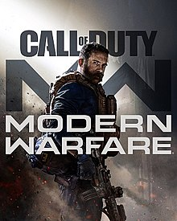

| Action Games | Descrpition | Cost |  |
Call of Duty: Modern Warfare is a first-person shooter video game developed by Infinity Ward and published by Activision. Serving as the sixteenth overall installment in the Call of Duty series, as well as a reboot of the Modern Warfare sub-series,[1][2][3] it was released on October 25, 2019, for Microsoft Windows, PlayStation 4, and Xbox One. The game takes place in a realistic and modern setting. The campaign follows a CIA officer and British SAS forces as they team up with rebels from the fictional country of Urzikstan, combating together against Russian forces who have invaded the country. The game's Special Ops mode features cooperative play missions that follow up the campaign's story. The multiplayer mode supports cross-platform multiplayer for the first time in the series. |
70 |
|
Need for Speed: Most Wanted is a 2005 open world racing video game, and the ninth installment in the Need for Speed series. Developed by EA Canada and published by Electronic Arts, it was released on November 11, 2005, for PlayStation 2, Xbox, GameCube, Nintendo DS, Microsoft Windows, Game Boy Advance and Xbox 360. An additional version, entitled Need for Speed: Most Wanted 5-1-0, was released in the same year for PlayStation Portable. The game focus on street racing-oriented game play involving a selection of events and racing circuits found within the fictional city of Rockport, with the game's main story involving players taking on the city's most elite street racers to become the most wanted racer of the group. |
65 |
 |
Red Dead Redemption 2[a] is an action-adventure game developed and published by Rockstar Games. It was released for the PlayStation 4 and Xbox One in October 2018, and for Microsoft Windows in November 2019. The game is the third entry in the Red Dead series and is a prequel to the 2010 game Red Dead Redemption. The story is set in 1899 in a fictionalized representation of the Western, Midwestern and Southern United States and follows outlaw Arthur Morgan, a member of the Van der Linde gang. Arthur must deal with the decline of the Wild West whilst attempting to survive against government forces, rival gangs, and other adversaries. The story also follows fellow gang member John Marston, the protagonist of Red Dead Redemption. |
85 |
|---|